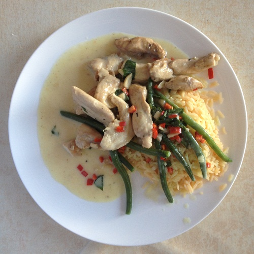

Curry de poulet au coco
Ingrédients pour 2 personnes
- 2 dl de lait de coco
- 15 g de pâte de curry verte
- 1 c à c de cassonade
- 2 c à c de sauce de poisson
- 1 feuille de citronnier thaï
- 250 g de blancs de poulet
- 35 g de haricots verts
- 2 c à c d'huile d'arachide
- 7 feuilles de basilic thaï ou de basilic
- 25 g de cacahuètes fraîches
- 1 grand piment rouge
Préparation

- Chauffez le lait de coco avec la pâte de curry, la cassonade, la sauce poisson et les feuilles de citronnier, dans un wok ou une poêle profonde. Laissez mijoter pendant 10 minutes, sans couvercle.
- Coupez le poulet en dés et faites-les dorer 3 minutes dans l'huile, dans une autre poêle. Ajoutez-les au lait de coco avec les haricots verts et la moitié des feuilles de basilic. Laissez mijoter 7 minutes.
- Hachez les cacahuètes et faites-les griller dans une poêle anti-adhésive.
- Égrenez les piments et coupez-les en rondelles. Ajoutez-les au curry avec les cacahuètes et le reste des feuilles de basilic. Servez immédiatement.
Remarque
- Recette hot comme en Thaïlande.
- Servir avec du riz thaï ou avec des nouilles de riz.